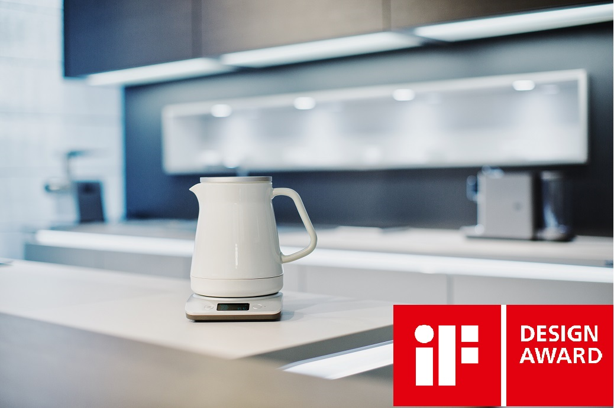
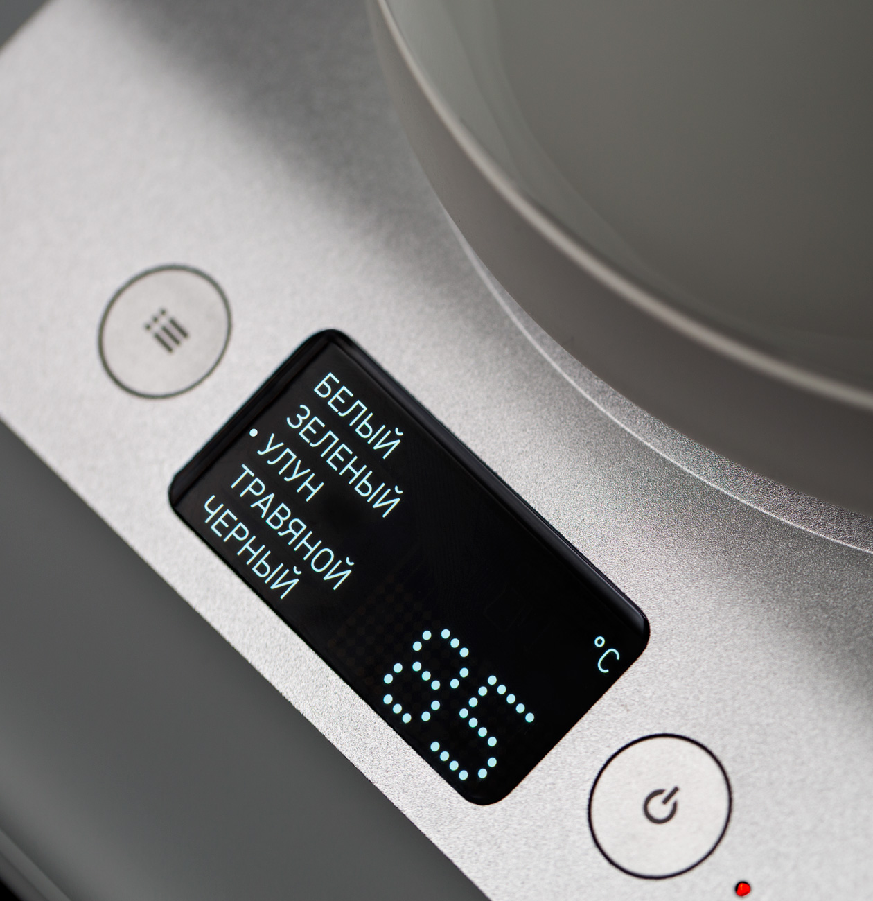
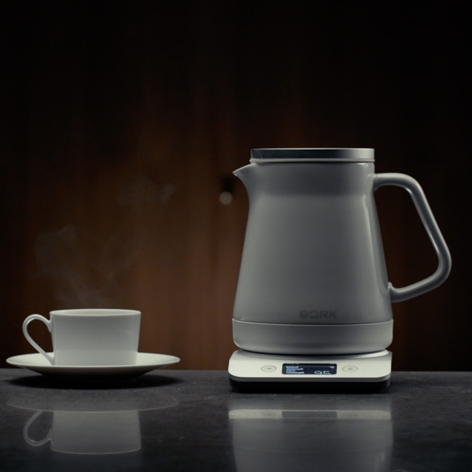
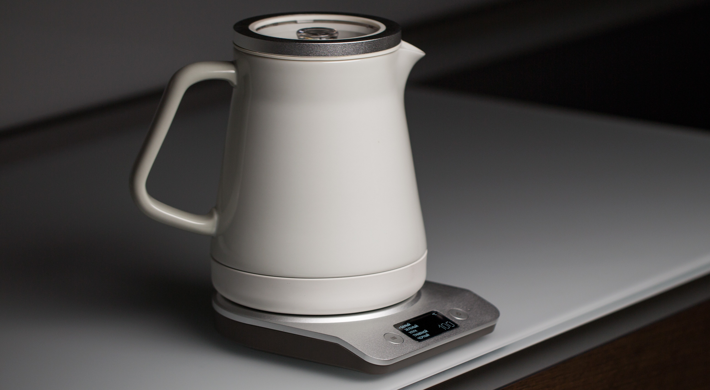
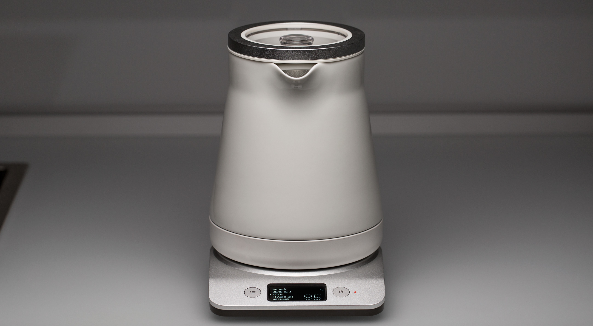

Чайник K781
Изящный керамический чайник с температурными режимами для разных напитков. Чайник BORK K781 удостоен престижной награды IF DESIGN AWARD!
5 температурных режимов
BORK K 781, имеет пять предустановленных температурных режимов, которые учитывают при заваривании сорт чая, степень его ферментации и особенности измельчения чайного листа. Данные параметры позволяют по-настоящему раскрыть аромат чая и получить идеальный вкус.
- Белый 65°С
- Зеленый 75°С
- Улун 85°С
- Травяной 95°С
- Черный 100°С
Тихая работа
Полированный нагревательный элемент и специально разработанная форма керамического графина обеспечивают низкий уровень шума. Это позволит общаться даже шёпотом во время работы чайника.
Быстрое закипание
Конический выступ на нагревательном элементе, увеличивает площадь соприкосновения с водой, поэтому чайник быстрее закипает и как результат расходует меньше электроэнергии.
Технология BOIL FIRST
В случае, если вы отказываетесь пользоваться сырой водой, данная программа позволит вскипятить воду, а затем получить необходимую температуру в зависимости от выбранного сорта чая. Функция включается нажатием и удержанием 3 секунды кнопки on/off, при этом на дисплее отображается стрелка направленная вверх.
Обзор «ВОКРУГ»
Информативный LCD-дисплей с русскоязычным интерфейсом, отображает текущую температуру и выбранный режим. Плавный наклон передней панели и высококонтрастный LCD дисплей, как в дорогих авто, просматриваются под любым углом.
Экологичность и удобство использования
Керамическая колба прекрасно держит тепло и не влияет на качество и структуру воды. Таким образом, вода в чайнике сохраняет все свои полезные свойства и позволяет полностью раскрыть вкус того или иного напитка. Идеальный угол носика, обеспечивает плавную подачу воды без пролива по корпусу. Графин, конической формы с матовой силиконовой основой, позволяет располагать его на любой горизонтальной поверхности. Чайник не скользит, а Ваша мебель защищена от царапин. Матовый кабель, является наиболее надёжным, так как не боится изломов, перепадов температур и влажности.
Безопасность
Сенсорный датчик выключения питания, находится в нагревательном элементе. Эта технология позволит отключиться чайнику при наборе необходимой температуры, даже при открытой крышке.
Технические характеристики
Напряжение: 220–240 В
Частота: 50/60 Гц
Мощность: 1280 –1520 Вт
Габариты : 222*152*202 мм
Объем: 1,2 л
Вес: 1,9 кг
Страна-производитель: Китай